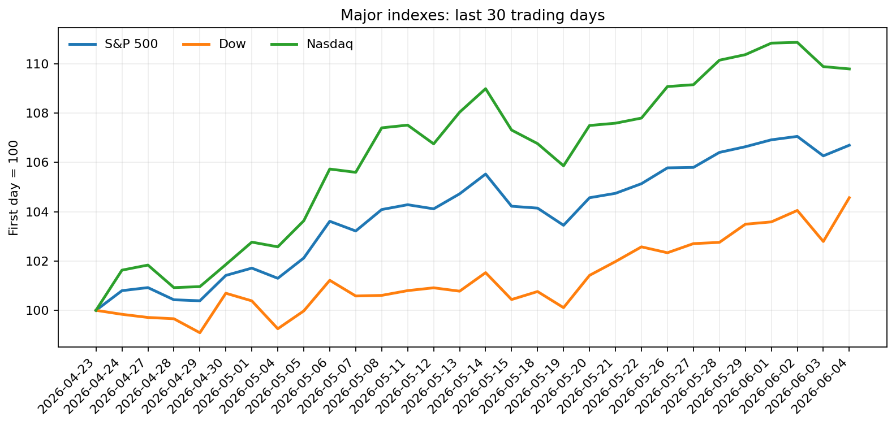
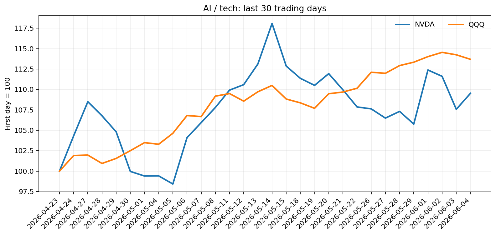
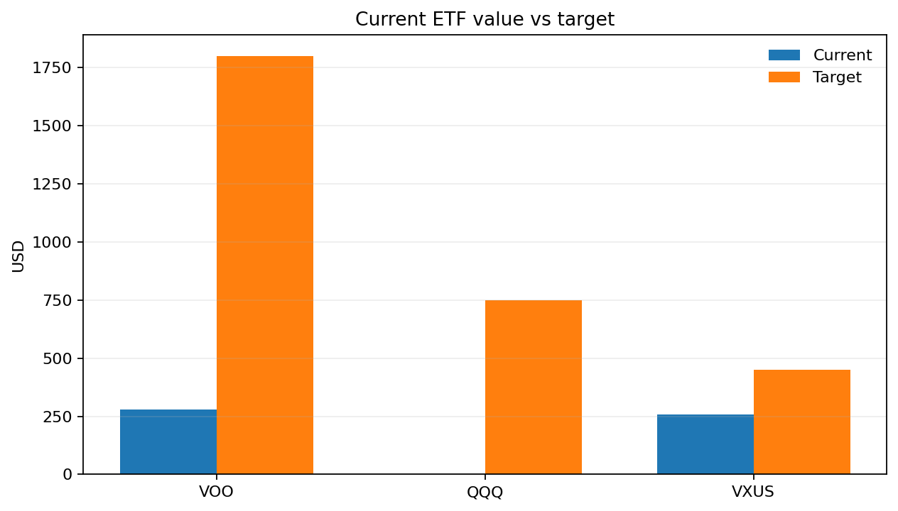
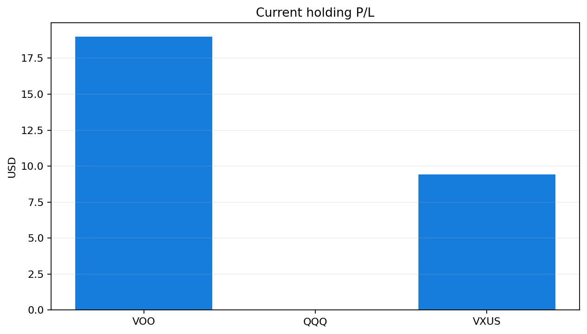

VOO$696.06
- 持仓
- 0.4 股
- 平均成本
- $648.57
- 当前市值
- $278.42
- 浮盈亏
- +7.32% / +19.00美元
偏正面。标普上涨，宽基仍稳，是当前组合里最可靠的核心仓位。
市场仍是结构分化。道指强，标普稳，纳指和QQQ偏弱。说明资金在往防御和非科技轮动，不是全面风险偏好上升。NVDA当天走强，但QQQ下跌，表示AI权重股内部有分歧，芯片反弹还没带动大盘科技重新占优。
AI链条短线没有失去故事，但交易上更像分歧修复，不是确认性趋势。NVDA强于QQQ是积极信号，但Broadcom后遗症、亚洲芯片走弱和科技 futures 偏软，说明AI板块仍受估值和预期扰动。对QQQ应保持谨慎，等它重新跑赢标普再加仓更稳。
宏观和新闻标题共同指向：短线风险偏好不均衡，科技/芯片仍承压，价值和金融更占优。对个人组合来说，防守性资产和宽基仍比追逐高贝塔科技更合适。
偏正面。标普上涨，宽基仍稳，是当前组合里最可靠的核心仓位。
中性偏正面。海外资产小涨，但新闻里亚洲科技受压，VXUS更适合维持小比例分散，不宜主动加太快。
偏谨慎。指数当天回落，且新闻显示科技和AI情绪分歧明显。只有在QQQ重新走强并确认强于标普后，才适合加仓。
当前强买入信号：没有出现。当前没有足够强的“全面买入”信号，尤其对QQQ和芯片链条。
当前可执行信号：有可执行信号：继续按目标仓位补VOO，不追QQQ；若当天只能买一笔，优先VOO，其次小额VXUS，QQQ等待确认转强。




